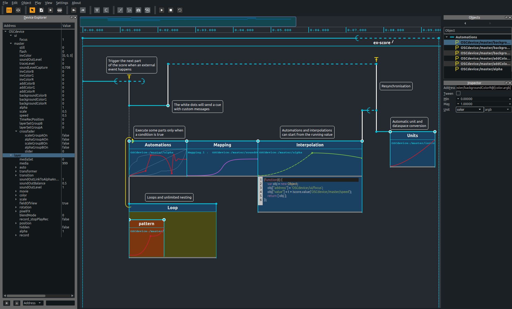

Score documentation
Version 2.0.0.a4
Presentation
Score is an interactive sequencer for intermedia authoring. It allows to create flexible and interactive scenarios and is especially designed for live performance, art installations, museography or any context requiring a precise and interactive execution of timed events.
Score brings timeline-based precise automation authoring as offerd in modern DAWs as well as flexible and interactive event triggering as offered in cue-based software in a unified environment. These two paradigms can be combined and used in parallel or hierarchically in Score's scenario, which provides a high level of control and of openness, as is required by today’s creation.

Table of content
This documentation will guide you through Score's workflow and advanced features.
First steps
This section offers a general presentation of Score main concepts and workflow. It aims at guiding through the authoring of scenarios in Score.
Introduction
Time approach in Score
Meet the Score interface
Writing your first scenario
In depth
This section offers advanced documentation on the various features offered in Score.
Processes
Automation Process
Interpolation Process
Mapping Process
Loop Process
Scenario Process
How tos ?
This section provides short technical highlights on different operations in Score application
Setup
Setup an OSC device
Manually declare a namespace
Use the learn function
Edit
Update stored state
Further documentation
Some informations may be missing from the documentation as new features get implemented in Score. Further assitance can be obtained from the Ossia forum or by joining Score's Gitter chat room